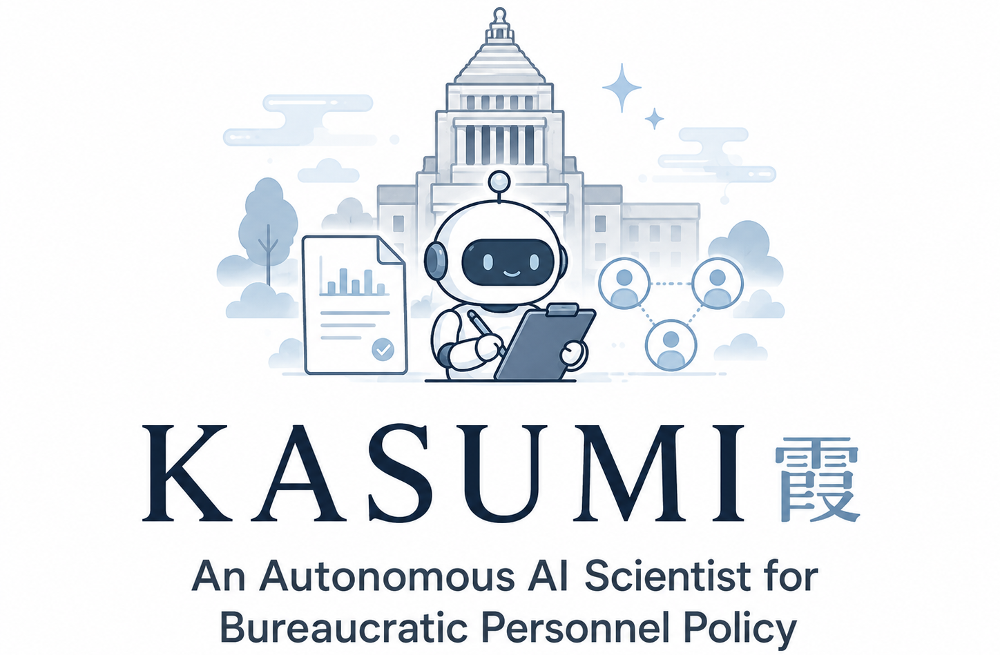
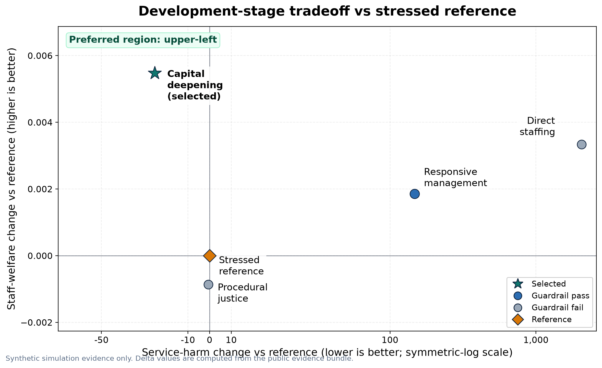

Bureaucratic personnel policy • multiseed holdout • verified claims
KASUMI
A compact public release of an autonomous AI-scientist workflow for bureaucratic personnel policy: staffing and transfer program discovery, agent-based public-service simulation, frozen multiseed holdout, evidence-bound paper writing, and automated review.
Read the generated paper · Inspect evidence · Run the replay
Autonomous personnel-policy research loop
Staffing ideas → transfer design → agent-based bureaucracy simulation → multiseed holdout → verified claims → automated review.
4candidate interventions
3/3holdout guardrail pass
153verified claims
Selected pathway
The development stage selected capital_deepening_pathway. In frozen holdout, the selected policy improved the primary welfare endpoint in every seed while satisfying all guardrails.
